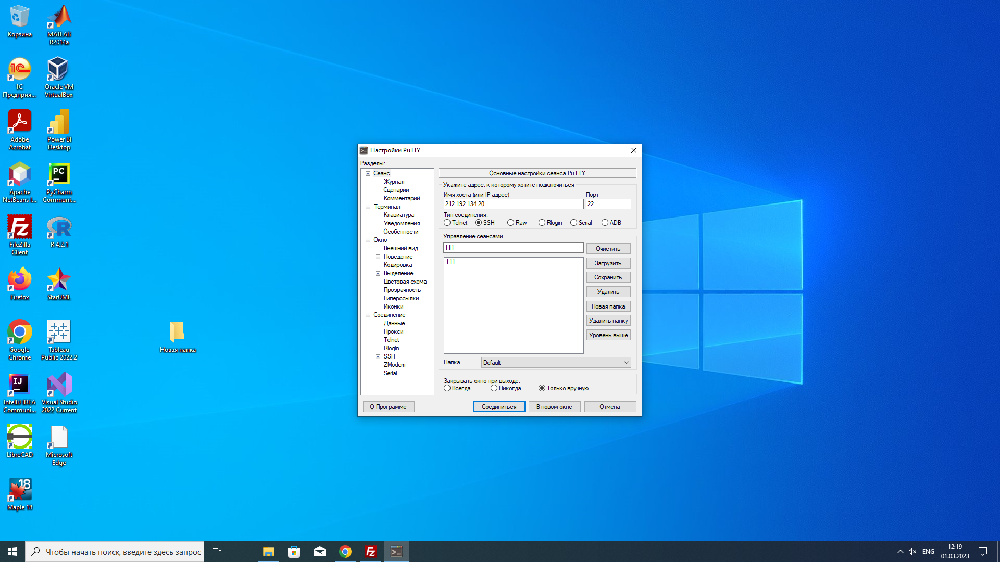
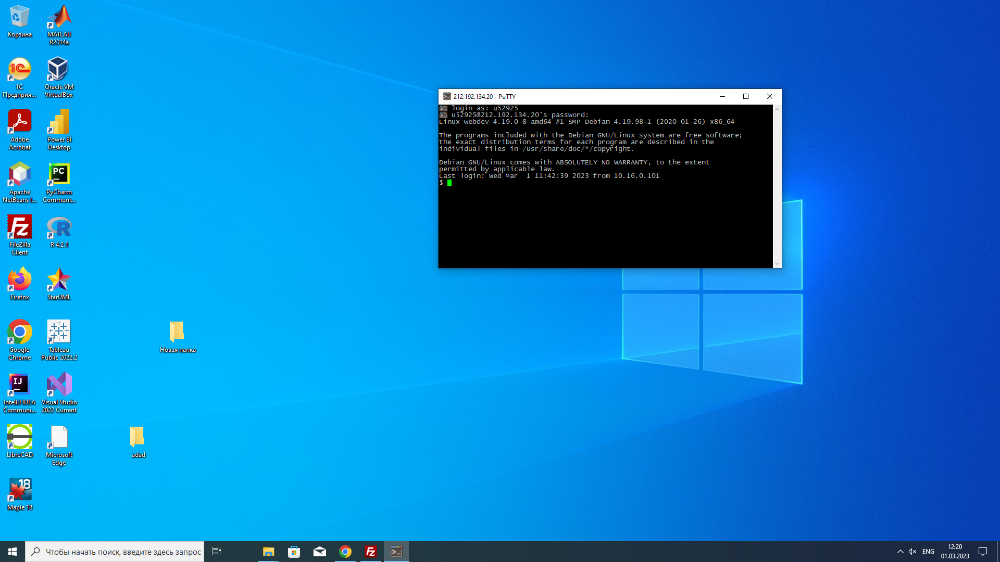
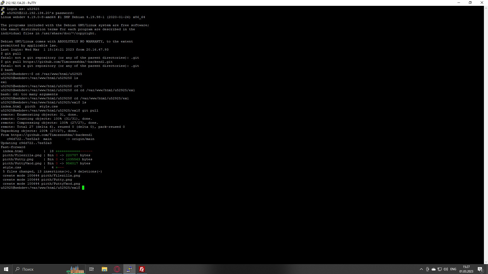

Сам Putty
Сам вход в Putty
Узнаю IP-адрес веб-сервера с помощью команды ping
С помощью команды Nslookup узнаю A-запись(соответствие доменного имени и IPv4-адреса)
и МХ-запись (на какой адрес почтового сервера должна направляться электронная почта
С помощью команды "whois" узнаю дату регистрации домена
С помощью Filezilla подключаюсь к учебному серверу и копирую на локальный компьютер файлы задания
С помощью команды гитпул изменяю файл индекс,для того, чтобы загрузить остатки скриншотов.Использую команды cd для спуска по папкам, ls для просмотра содержимого